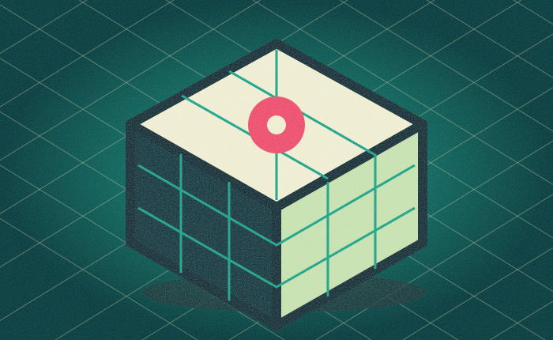
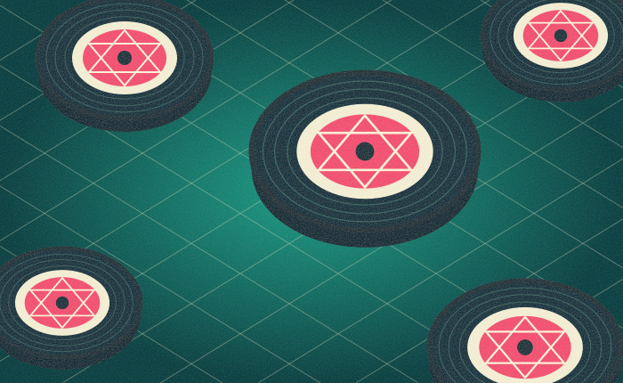

01 / СОХРАНИТЬ ХАРАКТЕРТа самая обложка.
Та самая обложка.
Другое ощущение.
Начните с изображения, в котором уже есть ваш звук. Попробуйте медленный дрейф, пульс или фактуру плёнки.
Примерить движение ↗Превратите обложку релиза
в визуал, который чувствует ваш трек.
Обложка уже передаёт настроение вашей музыки.
Мы добавляем ей ещё одно измерение — время.
ОДНА ОБЛОЖКА. НОВАЯ ЖИЗНЬ.
От статичного изображения
к маленькой истории вашего релиза.

Начните с изображения, в котором уже есть ваш звук. Попробуйте медленный дрейф, пульс или фактуру плёнки.
Примерить движение ↗
Три настроения движения и вертикальный формат. Сравните результат сразу, без промптов и сложного редактора.
Открыть демо ↗Для сингла, который скоро выйдет.
Для музыки, которой хочется поделиться.
Для своего визуального языка.
01 / ПОПРОБУЙТЕ НА СВОЕЙ ОБЛОЖКЕ
BROWSER DEMOПримерьте три настроения. Выберите то,
которое попадает в вашу музыку.
Картинка остаётся в вашем браузере.
Медленный наезд и мягкое скольжение. Для музыки, в которой хочется остаться.
Видео WebM · 720 × 1280 · запись в браузере
Это концепт будущего AI-сервиса. Сейчас работает локальная анимация обложки: движение камеры и визуальные эффекты. Нейрогенерация видео не подключена. Ни загрузки на сервер, ни оплаты.
ПУТЬ К ВАШЕМУ ВИЗУАЛУ
Выберите JPG, PNG или WebP. Файл останется в браузере.
Примерьте движение. Найдите то, что подходит вашему треку.
Скачайте демо и добавьте свою музыку в редакторе.
03 / ПАРА ДЕТАЛЕЙ
Пока это работающий демонстрационный сайт. Он анимирует картинку средствами браузера. Генерация новых сцен и движение объектов с помощью AI — следующий этап концепции.
Она открывается локально в вашем браузере. Мы не отправляем файл на сервер и не сохраняем его после перезагрузки страницы. Выбирайте изображение, на использование которого у вас есть права.
Демо скачивается без звука, в формате, который поддерживает ваш браузер: обычно WebM. Для Reels добавьте свою музыку и при необходимости переведите видео в MP4 в редакторе. Доступность записи зависит от браузера.
Это демо бесплатно. Платной генерации, подписки и оплаты здесь нет. Стоимость будущего сервиса пока не определена.